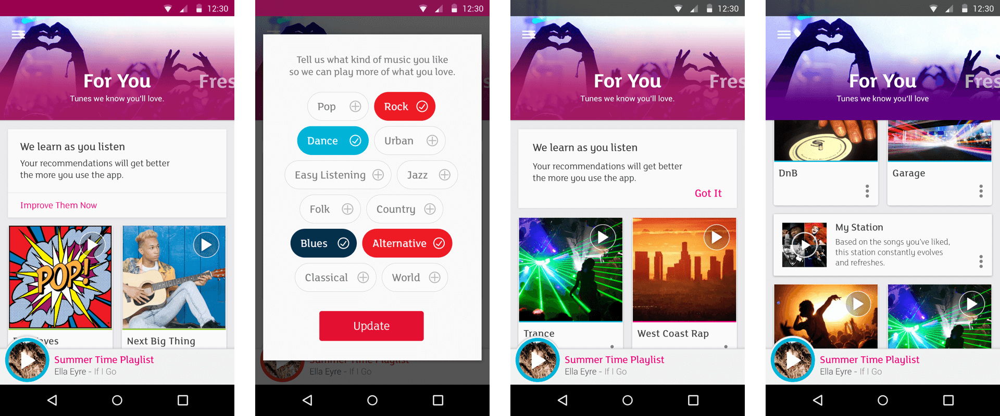
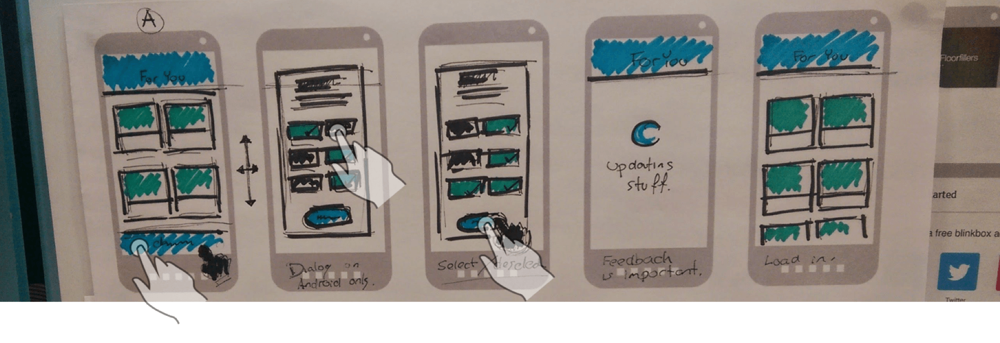
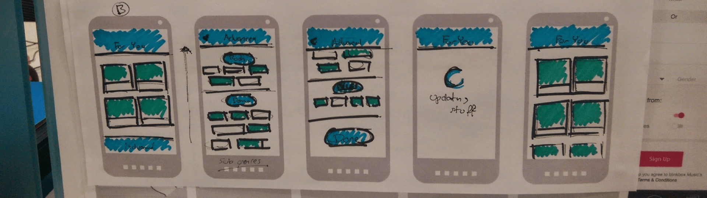
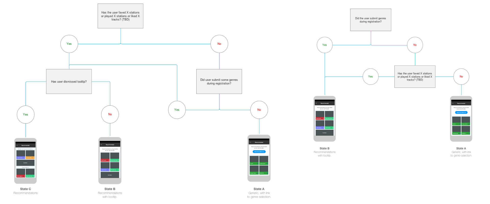
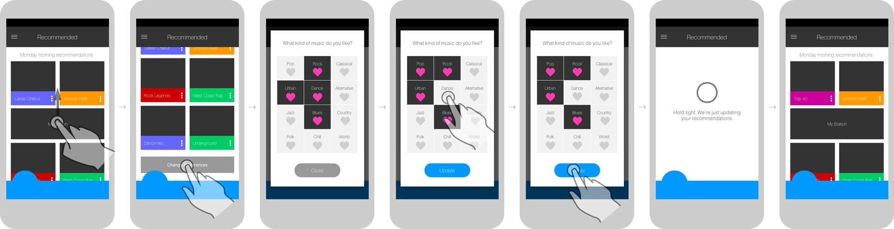
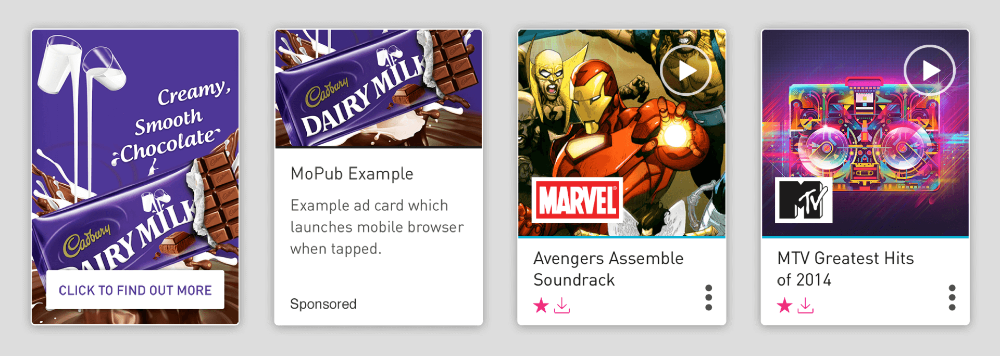

Music streamers have quickly arrived at a place where they expect to be offered a deeper discovery experience which is tailored to their personal music tastes. At Blinkbox Music we aimed to provide a meaningful set of recommendations, with minimal input from the user, allowing ongoing use data to further tailor this content.
Concept sketches, showing how a new user may be taken through towards a set of bespoke recommendations. As a rule, we wanted to limit the experience to a simple 2 or 3 step process before starting the user off on a path of music discovery which would be relevant to their tastes.
Users would arrive at the recommendations section having had varying degrees of engagement with the app. As such, logic flows were drafted to detail the type of content they would be presented with, based on a series of different possible criteria. For example; if they had linked social media accounts from which we were able to draw music taste data, or if they had previously interacted with the onboarding experience.
Moving forward, more refined wireframes were drafted within Axure. Low fidelity prototypes, also created in Axure proved useful, not only during in-house testing but also in engaging the development team with the vision.
Consideration needed to be given to the ad supported part of the service, for which promoted playlists or dynamic advertising was placed within certain areas of the app. Varying card designs were needed, aiming to differentiate this type of content, while maintaining a consistent visual feel.
